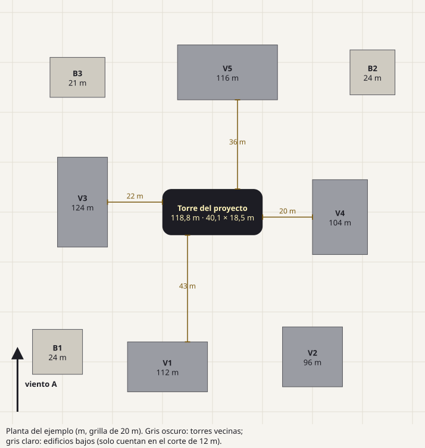
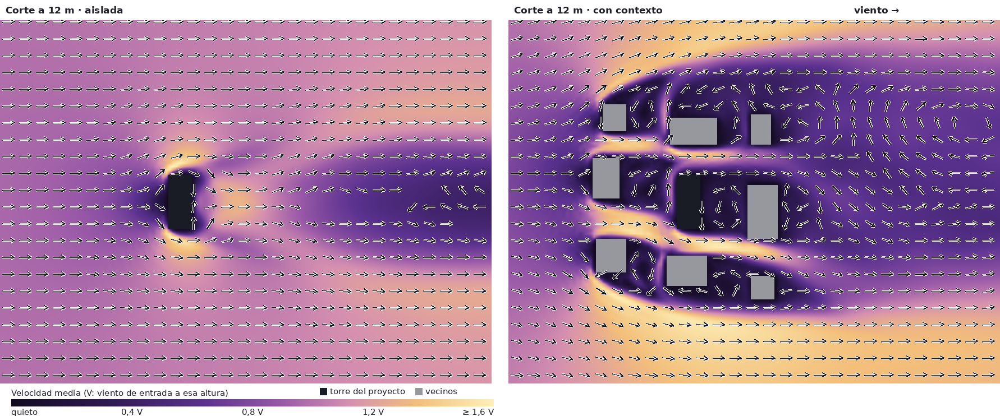
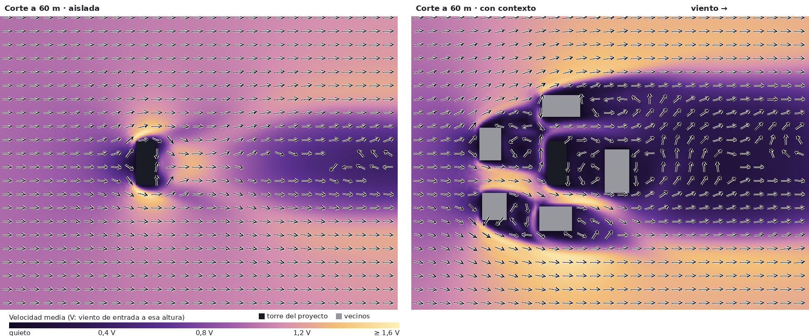
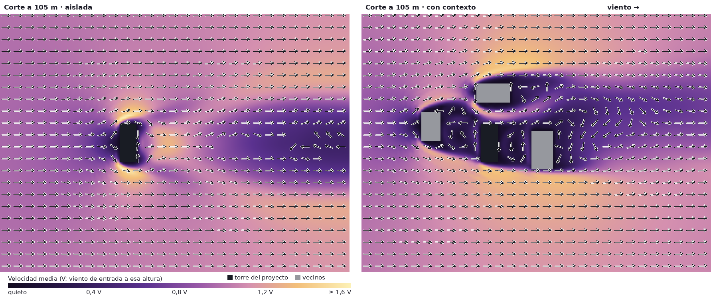

Ejemplo de contexto urbano para el simulador de viento: diseño del escenario, simulación en el túnel 2D (aislada contra con contexto) y propuesta para llevarlo a la app.
1. Para qué
El CIRSOC 102 da las presiones de una torre aislada en terreno abierto. En una ciudad, las torres vecinas cambian el viento: lo tapan (protección), lo encajonan entre dos edificios (canal o efecto Venturi, con más viento en la vereda), o le mandan a la torre la estela de remolinos de la que tiene adelante (interferencia de estela). El reglamento no cuantifica estos efectos y recomienda ensayos en túnel de viento; acá se los muestra de forma didáctica con el túnel de la app.
2. El escenario

La torre del proyecto (40,1 × 18,5 m con esquinas redondeadas, 118,8 m) en el medio de una manzana, con el viento A soplando hacia +y. Alrededor, cinco torres de altura parecida (96 a 124 m) y tres edificios bajos, ubicados para que aparezcan los efectos típicos:
protección parcial: V1 tapa la mitad oeste de la fachada de barlovento, a 43 m;
canales: calles de 22 m (con V3) y 20 m (con V4) a los costados;
estela: V5, a 36 m a sotavento, recibe la estela de la torre;
altura: V2 (96 m) y V4 (104 m) no llegan a la parte alta; los edificios bajos solo cuentan cerca del suelo.
Los datos están en contexto_ejemplo.json, en coordenadas del proyecto: el mismo formato puede usarlo la app.
Id
Edificio
Planta (m)
Alto (m)
Para qué está
V1
Torre a barlovento (corrida al oeste)
32 × 20
112
tapa la mitad de la fachada de barlovento: protección parcial y estela que llega a la torre
V2
Torre a barlovento (este)
24 × 24
96
más baja: deja pasar el viento por arriba de los 96 m
V3
Torre lateral oeste
20 × 36
124
calle de 22 m entre las dos: canal (efecto Venturi) en la esquina oeste
V4
Torre lateral este
22 × 30
104
calle de 20 m al este, hasta los 104 m
V5
Torre a sotavento
40 × 22
116
la estela de la torre del proyecto choca con ella (interferencia de estela)
B1
Edificio bajo (7 pisos)
20 × 18
24
rugosidad del entorno cerca del suelo
B2
Edificio bajo (7 pisos)
18 × 18
24
rugosidad del entorno cerca del suelo
B3
Edificio bajo (6 pisos)
22 × 16
21
rugosidad del entorno cerca del suelo
3. Cómo se simuló
Túnel 2D de la app (Lattice Boltzmann D2Q9, colisión TRT con modelo de turbulencia, paredes exactas con la interpolación lineal), con tres cortes horizontales. En cada corte entran los edificios que llegan a esa altura. La planta de la torre es la carpintería real del proyecto. La torre tiene 16 celdas de ancho (celdas de 2,5 m); el dominio deja 250 m antes del grupo, 600 m después y 300 m a cada lado, igual con y sin contexto. Reynolds ≈ 1 000 y túnel lento (0,06 de la red). Las fuerzas se miden solo sobre la torre del proyecto. Arranque de 900/U0 pasos y medición durante 2 400/U0 pasos (unas 150 pasadas del aire por el ancho de la torre).
Lo que pasó en el camino. Con la interpolación de pared cuadrática (la que se usaba), las tres corridas con contexto se rompieron entre los 7 000 y los 12 000 pasos, aun con el túnel lento: la velocidad crecía sin sentido físico hasta 6 o 7 veces la de entrada. Es el mismo problema que se encontró en el 3D con la torre alta. Con la interpolación lineal (ahora la de la app, en 2D y 3D) las corridas son estables. En un canal de referencia la lineal tiene un error de ≈ 1 % (la cuadrática 0,3 %; las paredes en escalera 9 %).
Corte a 12 m con contexto: estable; el aire más rápido llegó a 0,175 en unidades de la red (2,9 veces la entrada).
Corte a 60 m con contexto: estable; el aire más rápido llegó a 0,141 en unidades de la red (2,3 veces la entrada).
Corte a 105 m con contexto: estable; el aire más rápido llegó a 0,142 en unidades de la red (2,4 veces la entrada).
4. Resultados
Valores de la torre aislada → con contexto. Cd: arrastre; Cl: fuerza lateral eficaz (cuánto se sacude de costado); St: Strouhal (con qué frecuencia se desprenden los remolinos); Cp promedio de la cara de barlovento y de los laterales; el pico de succión del contorno; y la velocidad media más alta alrededor de la torre (en veces el viento de entrada).
Corte
Vecinos en el corte
Cd
Cl
St
Cp barlovento
Cp laterales
Cp pico
Viento más alto
12 m
V1, V2, V3, V4, V5, B1, B2, B3
2,70 → 0,83 (-69 %)
±0,98 → ±0,15
0,192 → —
0,59 → -0,15
-1,97 → -1,13
-2,38 → -1,57
1,61 → 1,58 V
60 m
V1, V2, V3, V4, V5
2,70 → 0,80 (-70 %)
±0,98 → ±0,10
0,192 → —
0,59 → 0,05
-1,97 → -0,90
-2,38 → -1,24
1,61 → 1,53 V
105 m
V1, V3, V5
2,70 → 0,55 (-80 %)
±0,98 → ±0,19
0,192 → 0,516
0,59 → -0,26
-1,97 → -0,82
-2,38 → -1,50
1,61 → 1,47 V

Corte a 12 m. Nivel de la vereda alta: entran todos, también los edificios bajos.

Corte a 60 m. Media altura: solo las torres.

Corte a 105 m. Arriba: solo las torres de 105 m o más (V2 y V4 quedan debajo).
En las imágenes la planta está girada: el viento entra por la izquierda, arriba queda el oeste (V3) y abajo el este (V4). Los colores son la velocidad media en el tiempo con el espectro térmico de la app; las flechas, la dirección media del aire.
5. Lectura
Protección fuerte en esta dirección. Con el viento A, la torre queda detrás de V1 y V2: el arrastre baja de 2,70 a 0,83 (12 m), 0,80 (60 m) y 0,55 (105 m). En la cara de barlovento el Cp pasa de +0,59 a casi 0 o incluso a succión (−0,15 a 12 m, −0,26 a 105 m): la fachada que «da al viento» queda dentro de la estela de V1, donde el aire vuelve hacia atrás.
Arriba protege más de lo que se esperaría. A 105 m V2 y V4 ya no están, pero el arrastre es el más bajo (0,55): la torre queda de lleno en la estela de V1 (112 m) y con V5 justo detrás, que frena la estela. Es un efecto 2D exagerado: en la realidad, arriba de los 105 m el aire pasa por encima de V1 y la protección se pierde cerca de la azotea.
Casi no se sacude de costado. La fuerza lateral eficaz baja de ±0,98 a ±0,10–0,19 y, a 12 y 60 m, la estela ya no oscila con un ritmo claro (no hay Strouhal): los vecinos rompen la calle de remolinos de von Kármán. Esto vale para esta disposición; con otras separaciones (por ejemplo, una torre igual a 2–4 anchos a barlovento) la estela de la de adelante puede sacudirla más que estando aislada.
El viento fuerte se muda a las calles. Aislada, lo más rápido está en las esquinas de barlovento (1,61 V). Con el contexto, el aire rodea la manzana entera y se acelera por afuera (las franjas claras de las imágenes) y por las calles entre torres: a 12 m aparecen chorros entre las filas de edificios, con 1,5–1,6 V, que en la vereda son un problema de confort aunque la torre reciba menos carga.
Lo que no hay que concluir. Que la torre «necesita menos viento de diseño». Los vecinos pueden demolerse o cambiar, el viento viene de todas las direcciones y, con otra dirección, la misma vecindad puede canalizar el viento contra la torre. Por eso el reglamento diseña con la torre aislada y deja la interferencia para el ensayo en túnel.
Límites. Es un corte 2D: el aire no puede pasar por arriba de los edificios, y en la realidad pasa (por eso los vecinos más bajos que el corte no están, pero los que están tapan más que en 3D). El Reynolds es mucho menor que el real y la grilla es gruesa (2,5 m): los números sirven para comparar con y sin contexto con la misma configuración, no como valores de diseño. Una sola dirección de viento: con el viento B o girado, el resultado cambia por completo.
6. Cómo llevarlo a la app (propuesta)
Datos: una sección «Contexto» en el proyecto con los edificios vecinos (contorno en planta y altura), en las mismas coordenadas de la planta. Solo la usan los simuladores: no toca ningún método de cálculo ni el Excel.
Cómo se arma: escenarios armados con parámetros (fila a barlovento, manzana en damero, calle cañón, dos torres a los costados), edificios propios dibujados en la planta (rectángulo o polígono, con su altura) e importación desde DXF o un PDF calcado.
Túnel 2D: en cada corte, los edificios que llegan a esa altura; el dominio se agranda solo para que entre el grupo; la fuerza se mide solo sobre la torre (ya está). «Torre piso por piso» funciona igual: cada planta con su contexto.
Túnel 3D: los vecinos como prismas; con contexto conviene la grilla liviana o más fina, y las salvaguardas (guardia de estabilidad) son necesarias.
Resultados: aislada contra con contexto lado a lado (Cd, Cl, Cp por cara, fuerza por piso, confort Lawson en la vereda) y un factor de interferencia por piso (carga con contexto ÷ aislada).
Para un documento: el mismo formato de contexto_ejemplo.json sirve para armar el escenario de un sitio real a partir de un plano.